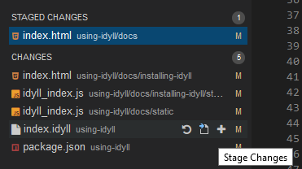
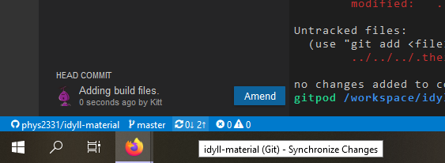
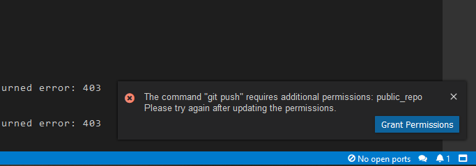

Using Gitpod
Work on this repository without installing Idyll
idyll create and, when prompted, using the “Article” template.What is GitPod?
GitPod is a web-based service which allows editing of files in a GitHub repository without the need to clone the repository and download relevant tools. If you don’t have any experience with installing programs through a terminal, this is the recommended way to go. It’s also a good option if you can’t or don’t want to install Idyll locally for one reason or another. The GitPod we have set up will already include Idyll, its dependencies, and a VSCode environment with the Idyll extension, so that you don’t have to set anything up.
Accessing GitPod
On the repository’s main page, if you scroll down, you should see a button that looks like this (but is clickable):
That button will take you to GitPod. Log in with your GitHub account. You will need access to edit this repository; contact Dr. Amy Roberts (amy.roberts@ucdenver.edu) if you can’t do that yet. If you don’t have one yet, you can create a GitHub account here.
Layout
GitPod relies heavily on the application Visual Studio Code, and their interfaces are therefore very similar.
![An image of the GitPod window. The top bar is as is typical for Windows applications, having options for "File," "Edit," etc. On the far left are several icons; the first is highlighted, which pulls up a left menu displaying a collapsed file tree. In the top of the main portion of the window are two tabs, the selected one showing a color-coded text editor with line numbers which takes up the majority of the screen. Beneath the main area of the screen are three more tabs. The selected tab is a terminal, which fills the remaining bottom portion of the screen. At the very bottom is a bar with some quick-access helpful information.](static/images/interface.png)
Editor
The main window is the VSCode editor.
VSCode uses color-coding, line numbers, and tab-completion to help you with editing.
You can use this just as you would any other IDE or text editor.
If you are editing a markdown (.md) file, you can click the button at the top right to open the preview.
(There is also a preview for Idyll, but it’s different, so we’ll get to that later.)
This area of the window is also highly customizable, and can be expanded and shrunk to make room for whichever area you need most.
Double-clicking one of the tabs in the editor will expand the editor to take up the entire browser tab; double-clicking again will return everything to how it was before. F11 will make your browser window full-screen.
Terminal
The Terminal is found at the bottom of the interface, under the tab labelled >_/workspace/idyll-material.
Here, you can run various Linux commands.
(For those with some experience, the shell is bash and the operating system is Ubuntu.)
There are three main commands you will want to run:
idyllwill generate the Idyll page in the current directory, verifying that it will build successfully and allowing you to access a preview.cdwill change to a specified directory. (cd ../will move up one level, so if you are inidyll-material/maple-syrup, it will take you toidyll-material/)lswill list every (visible) file in the current directory
The blue text to the left of $ will tell you where you are; in the image above, the user is in the /workspace/idyll-material/maple-syrup directory./workspace/idyll-material/ is the top level of the repository.
You probably should not edit files that are outside of this directory.
Resources for more information on commands:
- Idyll Commands (the next page for this guide!)
- Introduction to Linux, especially commands in Unix-based systems.
- Idyll Documentation - in particular, Getting Started, Deploying to the Web, and NPM
Sidebar
On the left sidebar are five icons.
The first is the Explorer (the file icon), which opens a collapsible file tree. This filetree is independent of what files you currently have open or where the terminal is currently looking.
The second is the Search menu. You can use this to search for a term in all files available, regardless of whether they are currently open.
The third is the Git menu (the icon with the branching line). We’ll discuss more about using git later.
The fourth is the Debug menu. I haven’t needed this menu for Idyll; usually the preview and the error messages that may appear in the terminal are sufficient. It also isn’t needed for basic markup.
The fifth is the extensions manager.
Please do not remove any extensions.
If you need an extension that is missing, you will need to find the source *.vsix file and drag it into the window to install; you cannot search for extensions in GitPod.
Using Git
Git is not a webiste (although there are websites designed to help with its use, such as GitHub) but a protocol that can be used in a variety of ways. The purpose of git is to help control versions of files, especially when working collaboratively -- unlike other collaboration tools such as GoogleDoc or OneDrive, users must confirm their changes and send their changes all at once. When two people have changed the same file, git can automatically merge those changes and will ask for user input if two people have changed, for example, the same line of code -- something that shouldn’t be automatically merged.
For now, we are going to focus on the most basic aspects of Git: staging, commiting, pushing, and pulling. The easiest way to manage git within GitPod will be to use the git tab in the sidebar.
Git Resources
- A more in-depth guide to using git in VSCode can be found here.
- Full git documentation can be found here.
Commit
Commiting your changes tells git that you want to confirm the changes you have made so far. When you commit, git will ask you for a “commit message.” This is a brief summary of the changes you made, so that anyone else -- or your future self -- can look back at that commit and easily tell what you did and possibly why you did it.
Before you commit a change, you will need to stage it. To do so, hover over the file you want to stage and select the plus button (Stage changes)
Once you have staged all changes you want to commit, type your commit message in the text box toward the top of the git menu, then choose the checkmark above it to commit your changes.

Congratulations, your changes have been committed! This doesn’t mean they are present in the repository, however; we still need to push our changes.
Push
(and pull)
Once your changes have been committed, you will need to push them in order to “sync” your changes to the repository.
At the bottom of your window, there should be a blue bar. On the left side are several indicators.
The first indicator has the github icon and repository_owner/repository_name. The second has branching arrows and branch_name.
Don’t worry too much about branches for now; the default branch is master and that’s the one you should be working on for now.
The third icon is the one we are interested in; it has a sync or refresh symbol and two numbers, one followed by a down arrow and one followed by an up arrow. The down arrow indicates how many commits that the repository has that we don’t and the up arrow indicates how many commits we have that the repository doesn’t have. If you click this icon, it will attempt to pull any changes you are missing and push any changes you have committed.
The last icons are used for debugging; we’ll be largely ignoring them because they are not particularly helpful for markup or for Idyll.
Go ahead and click on the sync icon.
You should get an option at the top of the window asking how you want to synchronize your changes; you want to pick the first option, “Pull and push commits from and to ‘origin/master.’”
Once you’ve selected this, git will push and pull any necessary commits!
First-Time Setup
The first time you log in, you will be able to edit, but if you try to push...
You will receive a permission error, so your edits will not be particularly useful until you change this. If we click the button that pops up, it will take us to this menu:

Under “GitHub”, select the option write public repos and click Update.
This should configure your permissions so that you can now push to our repository.
(Required permissions may vary for other repositories.)